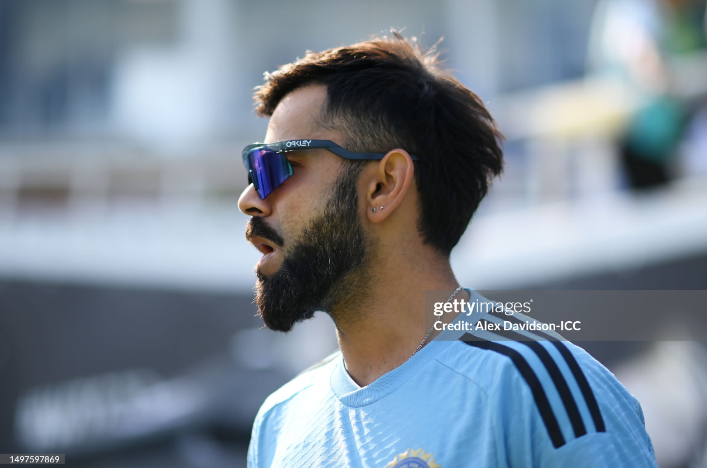

This is on his left shoulder. About it, Kohli had said that "I call it the God's eye. So, basically, the all-seeing eye. That everything that’s happening is being watched and there’s someone always keeping a count of everything that you do."
This one, depicting a Japanese Samurai warrior with a raised sword, is on his upper left arm. It's reportedly Kohli favourite tattoo. Kohli believes he gets his strength from this sword. And it also tells the story of a Samurai warrior's loyalty, self-discipline, ethical behaviour.
On his left arm is the tattoo of his ODI cap number, 175. The right-handed batsman, who helped India win the U-19 World Cup in March, made his international debut four months later in August, 2008 in a match against Sri Lanka at Dambulla. India lost the match by eight wickets, and Kohli made 12 off 22 balls.
This is the Test cap number on his left arm. Kohli made his Test debut in June 2011, against the West Indies at Kingston. India won the match by 63 runs with Kohli making four off 10 balls.
On his upper left arm is his mother's name - Saroj.
His father's name, Prem, is also inscribed on his left hand. Kohli lost his father, who worked as a criminal lawyer, in 2006.
His father's name, Prem, is also inscribed on his left hand. Kohli lost his father, who worked as a criminal lawyer, in 2006.
The image of a monastery is inscribed on the left side of his shoulder, just beside the tattoo of Lord Shiva. It signifies Kohli's yearning for peace and power.
Kohli's zodiac sign is written on his upper right arm. He was born on November 5, 1988.
'Om' - letters of sacred sound and a spiritual symbol is inscribed near the God’s Eye tattoo on his shoulder.
On his right forearm, is a tattoo depicting tribalism. It signifies loyalty to his tribe, the team, and of course, his fighting spirit, the aggro.